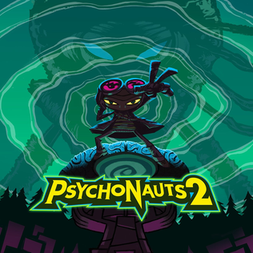

Platformer · 2021
Psychonauts 2
Sixteen years later, and the writing still lands every single time.

Cover: Wikipedia: Psychonauts 2
Facts
- Released
- 2021-08-25
- Genre
- Platformer
- Category
- Platformer
- Platforms
- PC, PlayStation, Xbox
- Developers
- Double Fine
- Publishers
- Xbox Game Studios
PC requirements
- Minimum
- [object Object]
- Recommended
- [object Object]